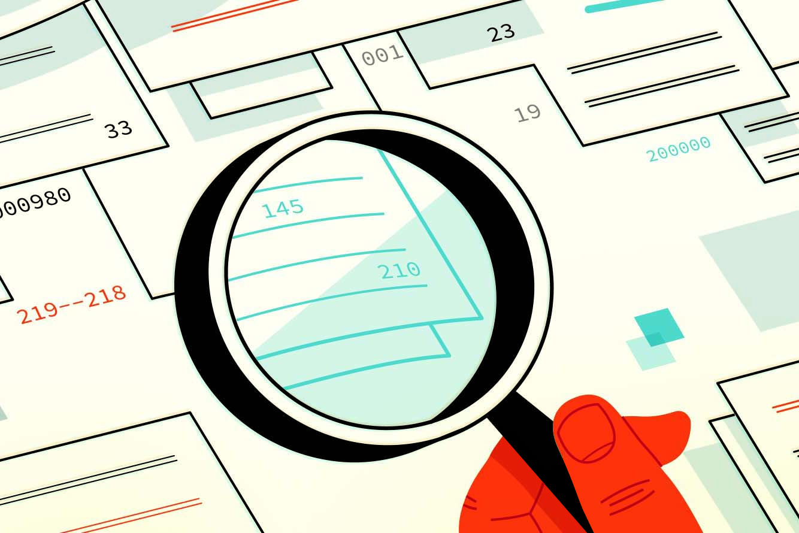
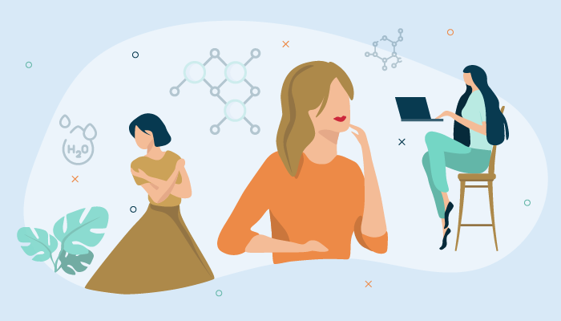

Conclusion
On this project, we explored conversations about women in STEM. We used extensive data from Reddit and additional information from the NSF site called “Diversity and STEM: Women, Minorities, and Persons with Disabilities 2023”. Our journey started with collecting and preparing data from subreddits linked to women in STEM. We scrutinized the comments and data submissions through preliminary data analysis, employed NLP techniques, by text cleaning, tokenization, and TF-IDF analysis and went forward with various Machine Learning Techniques to answer our Business Goals. Our analysis from submission length statistics to clustering analysis, provides a comprehensive view of the community’s conversations.
We expanded our analysis to include unsupervised machine learning techniques, specifically clustering analysis to enhance the depth and breadth of our project. This addition aligns with our evolving business goals, aiming to uncover underlying patterns and groupings in our dataset that may not be immediately apparent.
Key Findings

Engagement Patterns: Our time-series and hourly analyses reveals distinct patterns in community engagement, with notable peaks in certain subreddits and times. Users were most active between 4PM to 5PM as noticed in our hourly analysis and least active on the weekends as per our day wise analysis.
Keyword Insights: Keyword Discoveries: Examining keywords and visualizing them on word clouds provided perspective into common ideas extracted from entries and remarks made by females and minorities in the STEM fields. Words such as “incorrect” and “misinterpret” frequently show up in both comments and submissions, analyzed by high TF-IDF scores.
Sentiment Trends: Sentiment analysis across different platforms highlighted a spectrum of emotions, from positive to negative, underscoring the complex experiences of individuals in these fields. In both comments and submissions, Twitter and IMDB have higher positive sentiment rates but Vivek has a more balanced distribution of sentiment.
Subreddit Classification Accuracy: Using various classification models, we successfully predicted the subreddit origins of submissions based on their textual content. The Logistic Regression model stood out for its balanced performance, effectively classifying text into correct subreddits with high precision and recall.
Clustering of Discussion Topics: Through K-Means clustering, we identified distinct groupings in the textual data. The application of PCA (Principal Component Analysis) on these clusters illustrated how certain topics were closely related, while others were more dispersed.
The Road Forward
With limited time, our project faced certain roadblocks. However, there’s plenty of room to go forward Here’s how we could continue forward:
Broader Data Sources: We can incorporate more diverse data sources, such as professional forums or surveys, could enrich our understanding. Additionally, we can find more reddit subreddits linked to Women in STEM to get a bigger spectrum of Reddit conversations.
Longitudinal Study: Tracking these discussions over a longer period could reveal evolving trends and the impact of societal shifts.

This project is evidence of the ability of data to reveal the realities faced by women in STEM fields. It not only draws attention to the problems but also clears the path for defensible choices and actions. Even though we’ve come a long way, there is still more work to be done to achieve gender equity in STEM fields, and our work is an important piece of the puzzle.